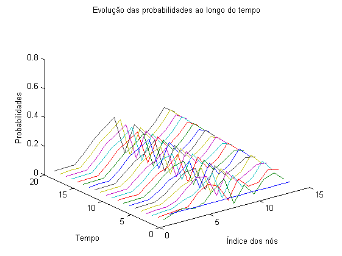
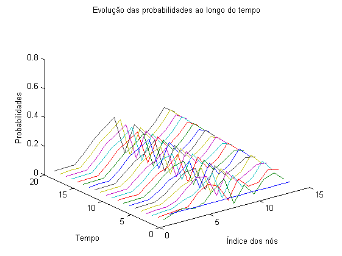

Contents
% Cadeira de Modelação e Simulação % % 4º Trabalho de laboratório % Seriação de páginas web % % Turno: 4ª feira, das 9h às 11h % % Elementos do grupo: % Gonçalo Vítor Nº73229 % Catarina Cruz Nº73319 % Diogo Brás Nº68212 warning off
Ex2b
close all clear all %Construção da matriz P P = zeros(13); P = changeLine(P, 1, [2,3,6]); P = changeLine(P, 2, [3,9]); P = changeLine(P, 3, [1,2,6,7]); P = changeLine(P, 4, [11]); P = changeLine(P, 5, [4, 11]); P = changeLine(P, 6, [12]); P = changeLine(P, 7, [5,6,10]); P = changeLine(P, 8, [6,7,12]); P = changeLine(P, 9, [9]); P = changeLine(P, 10, [7,12]); P = changeLine(P, 11, [5,13]); P = changeLine(P, 12, [6,13]); P = changeLine(P, 13, [7]); % A soma de todas as linhas de P é 1, dado que os valores de cada linha i correspondem às % probabilidades de transição entre esse estado i e os outros estados j e existe obrigatoriamente uma % transição entre estados. psum=sum(P,2); perm = [1 2 3 8 4 5 6 7 10 11 12 13 9]; % Matriz P em forma canónica Pcanonical = P(perm,perm); [V, D] = eig(P'); % D matriz diagonal que contém os valores, V matriz cujas colunas são os vectores próprios s1 = sprintf('Matriz de estados na forma canónica:'); disp(s1); for linha=Pcanonical(:,:); str=sprintf('%.4f\t',linha); disp(str); end s2 = sprintf('Verificação da soma das entradas de cada linha - soma de probabilidades'); disp(s2); disp(psum'); for i=1:13 s3=sprintf('Valor próprio %d: %e ',i,D(i,i)); s4=sprintf('Vector próprio %d:',i); disp(s3); disp(s4); str=sprintf('%.4f\t\t',V(:,i)'); disp(str); end
Matriz de estados na forma canónica:
0.0000 0.0000 0.2500 0.0000 0.0000 0.0000 0.0000 0.0000 0.0000 0.0000 0.0000 0.0000 0.0000
0.3333 0.0000 0.2500 0.0000 0.0000 0.0000 0.0000 0.0000 0.0000 0.0000 0.0000 0.0000 0.0000
0.3333 0.5000 0.0000 0.0000 0.0000 0.0000 0.0000 0.0000 0.0000 0.0000 0.0000 0.0000 0.0000
0.0000 0.0000 0.0000 0.0000 0.0000 0.0000 0.0000 0.0000 0.0000 0.0000 0.0000 0.0000 0.0000
0.0000 0.0000 0.0000 0.0000 0.0000 0.5000 0.0000 0.0000 0.0000 0.0000 0.0000 0.0000 0.0000
0.0000 0.0000 0.0000 0.0000 0.0000 0.0000 0.0000 0.3333 0.0000 0.5000 0.0000 0.0000 0.0000
0.3333 0.0000 0.2500 0.3333 0.0000 0.0000 0.0000 0.3333 0.0000 0.0000 0.5000 0.0000 0.0000
0.0000 0.0000 0.2500 0.3333 0.0000 0.0000 0.0000 0.0000 0.5000 0.0000 0.0000 1.0000 0.0000
0.0000 0.0000 0.0000 0.0000 0.0000 0.0000 0.0000 0.3333 0.0000 0.0000 0.0000 0.0000 0.0000
0.0000 0.0000 0.0000 0.0000 1.0000 0.5000 0.0000 0.0000 0.0000 0.0000 0.0000 0.0000 0.0000
0.0000 0.0000 0.0000 0.3333 0.0000 0.0000 1.0000 0.0000 0.5000 0.0000 0.0000 0.0000 0.0000
0.0000 0.0000 0.0000 0.0000 0.0000 0.0000 0.0000 0.0000 0.0000 0.5000 0.5000 0.0000 0.0000
0.0000 0.5000 0.0000 0.0000 0.0000 0.0000 0.0000 0.0000 0.0000 0.0000 0.0000 0.0000 1.0000
Verificação da soma das entradas de cada linha - soma de probabilidades
1 1 1 1 1 1 1 1 1 1 1 1 1
Valor próprio 1: 1.000000e+00
Vector próprio 1:
0.0000 0.0000 0.0000 0.0000 0.0000 0.0000 0.0000 0.0000 1.0000 0.0000 0.0000 0.0000 0.0000
Valor próprio 2: 1.000000e+00
Vector próprio 2:
0.0000 0.0000 0.0000 -0.1547 -0.3094 -0.3867 -0.4640 0.0000 -0.1762 -0.1547 -0.3094 -0.4640 -0.3867
Valor próprio 3: 7.400037e-01
Vector próprio 3:
-0.0000 -0.0000 -0.0000 -0.2322 -0.3436 0.4230 0.0560 0.0000 0.0000 0.0252 -0.5459 0.5886 0.0289
Valor próprio 4: 5.349917e-01
Vector próprio 4:
0.2335 0.3789 0.4996 0.0854 0.0914 -0.1620 -0.2209 0.0000 -0.4074 -0.1377 0.2451 -0.4315 -0.1743
Valor próprio 5: 4.450658e-02
Vector próprio 5:
0.0000 -0.0000 0.0000 -0.1019 0.0826 -0.0162 0.6047 0.0000 0.0000 0.0263 -0.2495 -0.3598 0.0138
Valor próprio 6: 4.450658e-02
Vector próprio 6:
0.0000 -0.0000 0.0000 -0.1019 0.0826 -0.0162 0.6047 0.0000 0.0000 0.0263 -0.2495 -0.3598 0.0138
Valor próprio 7: -9.261774e-01
Vector próprio 7:
0.0000 -0.0000 0.0000 -0.0846 0.1567 0.4963 -0.4454 0.0000 0.0000 0.1603 0.0067 -0.6224 0.3324
Valor próprio 8: -4.514197e-01
Vector próprio 8:
0.0000 -0.0000 -0.0000 -0.3188 0.5035 -0.1249 -0.3554 0.0000 -0.0000 0.1339 -0.2176 0.2686 0.1108
Valor próprio 9: -4.514197e-01
Vector próprio 9:
0.0000 -0.0000 -0.0000 -0.3188 0.5035 -0.1249 -0.3554 0.0000 -0.0000 0.1339 -0.2176 0.2686 0.1108
Valor próprio 10: -2.674959e-01
Vector próprio 10:
-0.5914 0.0258 0.6888 0.0018 -0.0047 -0.0538 -0.0231 0.0000 -0.0045 0.0597 0.0199 0.0853 -0.2037
Valor próprio 11: -2.674959e-01
Vector próprio 11:
-0.5914 0.0258 0.6888 0.0018 -0.0047 -0.0538 -0.0231 0.0000 -0.0045 0.0597 0.0199 0.0853 -0.2037
Valor próprio 12: 2.274813e-16
Vector próprio 12:
0.0000 -0.0000 -0.0000 0.0000 -0.0000 0.4082 0.0000 0.0000 0.0000 -0.8165 0.0000 -0.0000 0.4082
Valor próprio 13: 0.000000e+00
Vector próprio 13:
-0.0000 0.0000 0.0000 -0.0000 0.0000 -0.4082 -0.0000 0.0000 -0.0000 0.8165 -0.0000 0.0000 -0.4082
Os vectores próprios associados aos valores próprios unitários representam becos sem saída na cadeia de markov, ou seja, serão pontos de equilíbrio. O vector próprio associado ao primeiro valor próprio unitário tem apenas uma entrada não nula (correspondente ao estado 10). Isto deve-se ao facto de esta página não ter ligações para fora, o que implica que chegando a este estado, o sistema fica preso. O segundo vector próprio associado a um valor próprio unitário tem mais do que um valor não nulo e corresponderá a um ciclo fechado no qual o sistema ficaria preso, circulando entre os estados correspondentes às entradas não nulas.
2c
close all clear all %Construção da matriz P P = zeros(13); P = changeLine(P, 1, [2,3,6]); P = changeLine(P, 2, [3,9]); P = changeLine(P, 3, [1,2,6,7]); P = changeLine(P, 4, [11]); P = changeLine(P, 5, [4, 11]); P = changeLine(P, 6, [12]); P = changeLine(P, 7, [5,6,10]); P = changeLine(P, 8, [6,7,12]); P = changeLine(P, 9, [9]); P = changeLine(P, 10, [7,12]); P = changeLine(P, 11, [5,13]); P = changeLine(P, 12, [6,13]); P = changeLine(P, 13, [7]); % A soma de todas as linhas de P é 1, dado que os valores de cada linha i correspondem às % probabilidades de transição entre esse estado i e os outros estados j e existe obrigatoriamente uma % transição entre estados. soma=sum(P,2); s1 = sprintf('Verificação da soma das probabilidades em P:'); disp(s1); str=sprintf('%1d\t',soma); disp(str); perm = [1 2 3 8 4 5 6 7 10 11 12 13 9]; % Matriz P em forma canónica Pcanonical = P(perm,perm); prob0 = 1/13*ones(13,1); % k final - instante de tempo final da sim. kfinal = 20; % para um instante k % k = 10; % prob = prob0*P^k; prob_index = meshgrid([1:13],[0:kfinal])'; time = meshgrid([0:kfinal],[1:13]); prob_val = []; for k=0:kfinal prob_val(:,k+1) = (prob0'*P^k)'; end figure; plot3(prob_index, time, prob_val) xlabel('Índice dos nós') ylabel('Tempo') zlabel('Probabilidades') title('Evolução das probabilidades ao longo do tempo') figure; plot(prob_index,prob_val(:,20)); axis([0 14 0 0.8]); % verificar que para cada t a soma de prob_val é 1 uns = sum(prob_val); % é um vector de uns! s1 = sprintf('Verificação da soma das probabilidades para cada instante k:'); disp(s1); str=sprintf('%g\t',uns); disp(str);
Verificação da soma das probabilidades em P: 1 1 1 1 1 1 1 1 1 1 1 1 1 Verificação da soma das probabilidades para cada instante k: 1 1 1 1 1 1 1 1 1 1 1 1 1 1 1 1 1 1 1 1 1

Para k elevado (que representa t), a distribuição de probabilidades tende para um valor constante. ??
2d
close all clear all Q = zeros(13); alfa = .95; Q = changeLine(Q, 1, [2,3,6]); Q = changeLine(Q, 2, [3,9]); Q = changeLine(Q, 3, [1,2,6,7]); Q = changeLine(Q, 4, [11]); Q = changeLine(Q, 5, [4,11]); Q = changeLine(Q, 6, [12]); Q = changeLine(Q, 7, [5,6,10]); Q = changeLine(Q, 8, [6,7,12]); Q = changeLine(Q, 9, [9]); Q = changeLine(Q, 10, [7,12]); Q = changeLine(Q, 11, [5,13]); Q = changeLine(Q, 12, [6,13]); Q = changeLine(Q, 13, [7]); prob_estados(Q,alfa); % verificar que para cada t a soma de prob_val é 1 % uns=sum(prob_val); % é um vector de uns! %s1 = sprintf('Verificação da soma das probabilidades:'); %disp(s1); %disp(uns);
?? % comentar diferenças face ao anterior o ranking obtido faz sentido?
Ex 2e
%close all %clear all Q = zeros(13); alfa = .95; Q = changeLine(Q, 1, [2,3,6]); Q = changeLine(Q, 2, [3,9]); Q = changeLine(Q, 3, [1,2,6,7]); Q = changeLine(Q, 4, [11]); Q = changeLine(Q, 5, [4,11]); Q = changeLine(Q, 6, [12]); Q = changeLine(Q, 7, [5,6,10]); Q = changeLine(Q, 8, [6,7,12]); Q = changeLine(Q, 9, [9]); Q = changeLine(Q, 10, [7,12]); Q = changeLine(Q, 11, [5,13]); Q = changeLine(Q, 12, [6,13]); Q = changeLine(Q, 13, [7]); %linhas a serem mudadas: Q_inicial = Q; str = sprintf('Figura1 remoçao da aresta de 1 para 3'); Q = changeLine(Q, 1, [2,6]); [V, D] = eig(Q); prob_estados(Q,alfa); disp(str); Q = Q_inicial; str = sprintf('Figura2 remoçao da aresta de 1 para 6'); Q = changeLine(Q, 1, [2,3]); [V, D] = eig(Q); prob_estados(Q,alfa); disp(str); Q = Q_inicial; str = sprintf('Figura3 remoçao da aresta de 1 para 2'); Q = changeLine(Q, 1, [3,6]); [V, D] = eig(Q); prob_estados(Q,alfa); disp(str); Q = Q_inicial; str = sprintf('Figura4 remoçao da aresta de 3 para 2'); Q = changeLine(Q, 3, [1,6,7]); [V, D] = eig(Q); prob_estados(Q,alfa); disp(str); Q = Q_inicial; str = sprintf('Figura5 remoçao da aresta de 3 para 6'); Q = changeLine(Q, 3, [1,2,7]); [V, D] = eig(Q); prob_estados(Q,alfa); disp(str); Q = Q_inicial; str = sprintf('Figura6 remoçao da aresta de 3 para 7'); Q = changeLine(Q, 3, [1,2,6]); [V, D] = eig(Q); prob_estados(Q,alfa); disp(str); Q = Q_inicial; str = sprintf('Figura7 remoçao da aresta de 7 para 6'); Q = changeLine(Q, 7, [5,10]); [V, D] = eig(Q); prob_estados(Q,alfa); disp(str); Q = Q_inicial; str = sprintf('Figura8 remoçao da aresta de 8 para 12'); Q = changeLine(Q, 8, [6,7]); [V, D] = eig(Q); prob_estados(Q,alfa); disp(str); Q = Q_inicial; str = sprintf('Figura9 remoçao da aresta de 8 para 7'); Q = changeLine(Q, 8, [6,12]); [V, D] = eig(Q); prob_estados(Q,alfa); disp(str); Q = Q_inicial; str = sprintf('Figura10 remoçao da aresta de 8 para 6'); Q = changeLine(Q, 8, [7,12]); [V, D] = eig(Q); prob_estados(Q,alfa); disp(str); Q = Q_inicial; str = sprintf('Figura11 remoçao da aresta de 10 para 7'); Q = changeLine(Q, 10, [12]); [V, D] = eig(Q); prob_estados(Q,alfa); disp(str); Q = Q_inicial; str = sprintf('Figura12 remoçao da aresta de 10 para 12'); Q = changeLine(Q, 10, [7]); [V, D] = eig(Q); prob_estados(Q,alfa); disp(str); Q = Q_inicial; str = sprintf('Figura13 remoçao da aresta de 11 para 5'); Q = changeLine(Q, 11, [13]); [V, D] = eig(Q); prob_estados(Q,alfa); disp(str); Q = Q_inicial; str = sprintf('Figura14 remoçao da aresta de 12 para 6'); Q = changeLine(Q, 12, [13]); [V, D] = eig(Q); prob_estados(Q,alfa); disp(str); Q = Q_inicial; str = sprintf('Figura15 sem remoções de arestas'); prob_estados(Q_inicial,alfa); disp(str);
Figura1 remoçao da aresta de 1 para 3 Figura2 remoçao da aresta de 1 para 6 Figura3 remoçao da aresta de 1 para 2 Figura4 remoçao da aresta de 3 para 2 Figura5 remoçao da aresta de 3 para 6 Figura6 remoçao da aresta de 3 para 7 Figura7 remoçao da aresta de 7 para 6 Figura8 remoçao da aresta de 8 para 12 Figura9 remoçao da aresta de 8 para 7 Figura10 remoçao da aresta de 8 para 6 Figura11 remoçao da aresta de 10 para 7 Figura12 remoçao da aresta de 10 para 12 Figura13 remoçao da aresta de 11 para 5 Figura14 remoçao da aresta de 12 para 6 Figura15 sem remoções de arestas
 
 A Figura 14 representa a remoção da aresta que faz o estado 12 transitar para o estado 6. Aquando desta ocorrencia, criam-se dois ciclos - (7->6->12->13->7->...) e (7->10->12->13->7->...) - com passagem obrigatória pelos estados 7, 12 e 13 , e que são definidos pela transição de saída do nó 7. Isto explica portanto a existência dos máximos de probabilidade nos respectivos estados.
Ex 3a
close all clear all N = 13; prob0 = 1/N*ones(N,1); nruns = 1000; % define o número de runs burnin = 200; % n de passos em que não são contabilizados os estados passos = 2000;% n de passos em cada run Q = zeros(N); alfa = .95; Q = changeLine(Q, 1, [2,3,6]); Q = changeLine(Q, 2, [3,9]); Q = changeLine(Q, 3, [1,2,6,7]); Q = changeLine(Q, 4, [11]); Q = changeLine(Q, 5, [4,11]); Q = changeLine(Q, 6, [12]); Q = changeLine(Q, 7, [5,6,10]); Q = changeLine(Q, 8, [6,7,12]); Q = changeLine(Q, 9, [9]); Q = changeLine(Q, 10, [7,12]); Q = changeLine(Q, 11, [5,13]); Q = changeLine(Q, 12, [6,13]); Q = changeLine(Q, 13, [7]); E = ones(N); P = alfa*Q+(1-alfa)/N*E; histograma = zeros(N,1); hist_matrix=zeros(nruns,13); for i=1:nruns hh=waitbar(i/nruns); prob = prob0; rindex = find(cumsum(prob) > rand,1,'first'); % estado inicial % histograma(rindex) = histograma(rindex)+1; for j=1:passos from = rindex; rindex = find(cumsum(P(rindex,:)) > rand,1,'first'); % estado seguinte if(j > burnin) histograma(rindex) = histograma(rindex)+1; end to = rindex; if(P(from, to) == 0) error('There is a problem!'); end end end close(hh); freq_rel = histograma/(nruns*(passos-burnin)); disp('Vector de probabilidades dos estados após runs de Monte Carlo'); str=sprintf('%.6f',freq_rel); disp(str); figure; plot(1:13,freq_rel,'r'); axis([0 14 0 0.8]); %passos-burnin - n+ de vezes por run que se pode contabilizar um estado
Vector de probabilidades dos estados após runs de Monte Carlo 0.0060390.0080200.0096080.0487330.0946130.1243380.1434100.0038930.1516320.0491990.0951990.1465840.118732